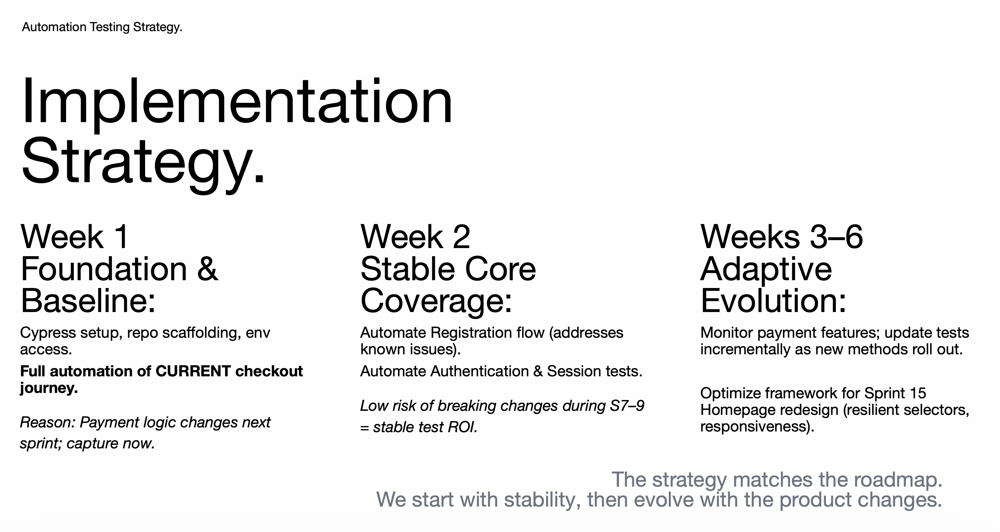
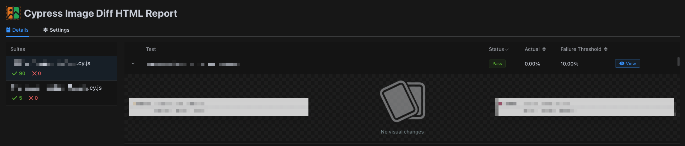
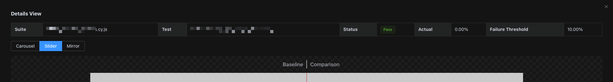
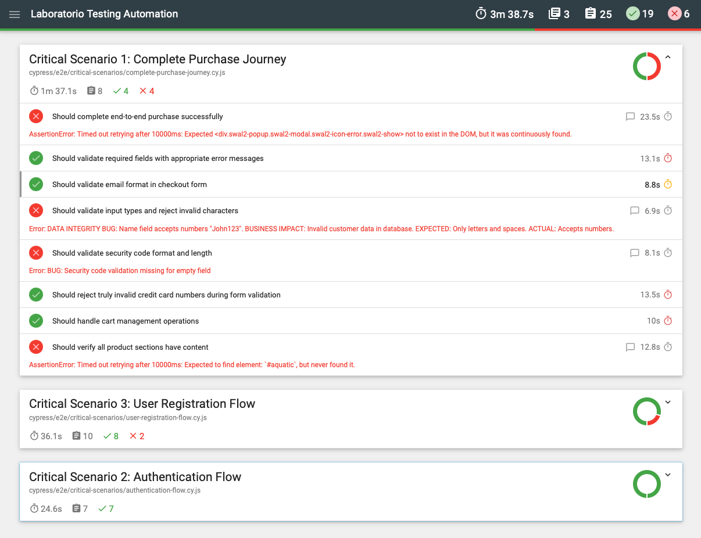
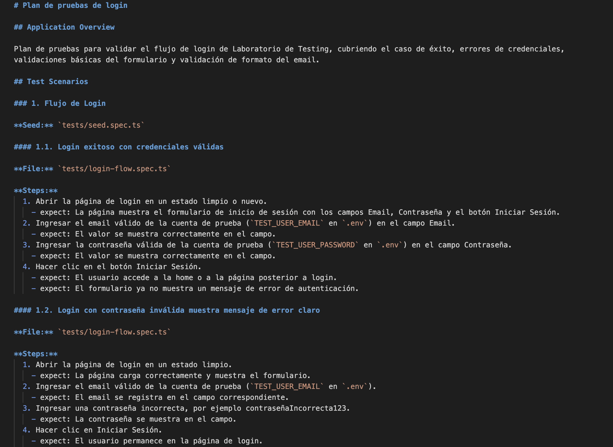

CASO PÚBLICO DE QA
Estrategia de cobertura basada en riesgo
Cobertura de compra, registro y autenticación priorizada según el riesgo de cambio y el impacto en las personas usuarias.
13 años asegurando que los productos digitales funcionen y tengan sentido. Construyo estrategias de testing y frameworks de automatización para equipos que necesitan calidad sin cuellos de botella.

Cómo trabajo
Empiezo por lo que importa, no por una lista de herramientas.
Empiezo por el riesgo: qué puede fallar, a quién afecta y dónde el equipo necesita confianza.
Integro la calidad en la entrega, desde el descubrimiento y los criterios de aceptación hasta el lanzamiento.
Automatizo lo repetible y dejo espacio para el criterio de producto, la usabilidad y los casos límite reales.
Mi experiencia en diseño UX me permite evaluar no solo si algo funciona, sino si tiene sentido para quien lo usa. El QA manual y la estrategia de calidad son mi base; la automatización acelera las comprobaciones repetibles. La IA apoya la planificación y la implementación, siempre con revisión humana del alcance, el comportamiento esperado y los resultados.
CASO PÚBLICO DE QA
Cobertura de compra, registro y autenticación priorizada según el riesgo de cambio y el impacto en las personas usuarias.
TRABAJO PROFESIONAL · ANONIMIZADO
Pruebas de migración con Cypress y regresión visual para áreas críticas de la interfaz, en escritorio y móvil.
PROYECTO PÚBLICO
Pruebas con Cypress para flujos críticos de e-commerce, con reportes y CI en varios navegadores que hacen visibles los fallos a tiempo.
PROYECTO PÚBLICO · IA COMO APOYO
Desarrollo de pruebas apoyado por IA, con revisión humana del alcance, el comportamiento esperado, las aserciones y los resultados.
El trabajo profesional se muestra de forma anonimizada para proteger la confidencialidad de clientes y proyectos.
Experiencia
Construí procesos de QA y automatización con Cypress para lanzamientos de productos empresariales. La automatización permitió validar flujos críticos de forma repetible antes de cada despliegue, redujo trabajo manual y dio al equipo visibilidad antes de cada lanzamiento. Coordiné equipos distribuidos y acompañé a perfiles de QA junior.
Lideré QA en proyectos ágiles en paralelo, incorporando automatización con Cypress, métricas de calidad y prácticas de preparación de lanzamientos.
Validé aplicaciones web en distintos dispositivos y flujos de frontend y backend, definiendo la estrategia de pruebas y los criterios de aceptación para lanzamientos importantes.
Priorizé pruebas de alto riesgo en plataformas de campañas, establecí prácticas base de QA y traduje problemas técnicos a impacto para los equipos responsables.
Con base en Barcelona. Abierto a posiciones a tiempo completo y colaboraciones en empresas tech con operación europea o global.

CASO PÚBLICO DE QA
La automatización empieza con una decisión: qué flujos necesitan confianza primero. Esta estrategia priorizó compra, registro y autenticación según los cambios previstos y su impacto en las personas usuarias.
AlcanceFlujos críticos de compra, registro y autenticación.
EnfoqueLa cobertura evoluciona con la hoja de ruta, sin tratar todas las pruebas como iguales.
ValorEl criterio de QA manual determina dónde la automatización aporta más.


TRABAJO PROFESIONAL · ANONIMIZADO
Las pruebas visuales comparan áreas clave de la interfaz con una referencia aprobada, tanto en escritorio como en móvil. Hacen visibles cambios inesperados sin sustituir la revisión humana.
CoberturaPáginas críticas y áreas compartidas de la interfaz en distintos tamaños de pantalla.
SeñalLas diferencias se miden contra un umbral definido y se revisan en contexto.
PrivacidadSe retiraron identificadores de cliente y proyecto de la evidencia mostrada.

El reporte agrupa las comprobaciones críticas de compra, registro y autenticación, haciendo visibles los fallos junto a las comprobaciones que sí pasan.
PROYECTO PÚBLICO
Esta suite valida flujos clave de e-commerce localmente y en GitHub Actions, tanto en Chrome como en Firefox. Una ejecución fallida es evidencia útil: indica al equipo dónde investigar antes de lanzar.
EjecuciónLos escenarios críticos se ejecutan de punta a punta, con un reporte HTML legible.
CILas ejecuciones en varios navegadores terminan incluso cuando uno de ellos detecta fallos.
ResultadoLos resultados diferencian flujos que funcionan de problemas que necesitan atención de producto o ingeniería.

El plan convierte el flujo de login en escenarios, pasos y resultados esperados claros.
PROYECTO PÚBLICO · IA COMO APOYO
La IA puede convertir un escenario definido en un punto de partida para el código de prueba. QA sigue siendo responsable de decidir qué importa, revisar la implementación e interpretar el resultado.
PlanificarLos escenarios definen el flujo, el comportamiento esperado y el riesgo antes de implementar.
GenerarLas interacciones en navegador aportan la base para código de Playwright y locators semánticos.
RevisarLa revisión humana valida el alcance, las aserciones y que la prueba refleje el comportamiento esperado.
VerificarLa suite se ejecuta en Chromium, Firefox y WebKit, con un reporte HTML como evidencia final.